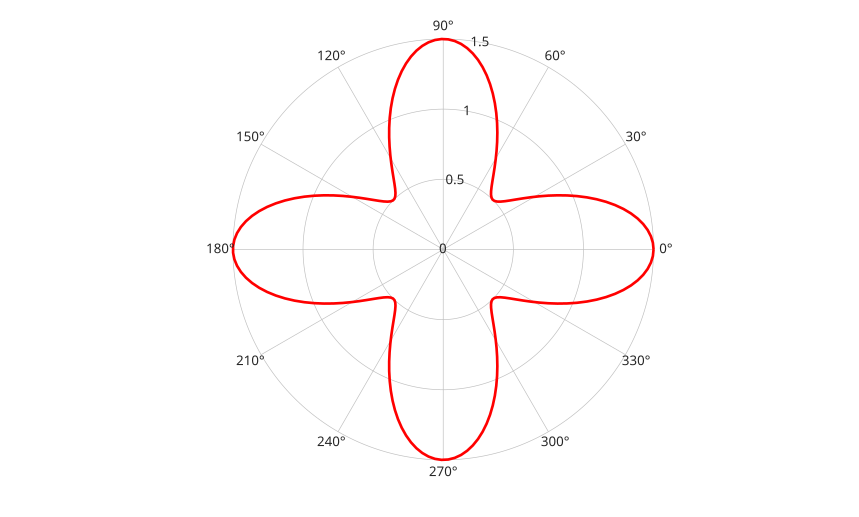

polarplot(rho)
polarplot(theta, rho)
polarplot(theta, rho, LineSpec)
polarplot(..., propertyName, propertyValue, ...)
polarplot(ax, ...)
go = polarplot(...)
| Paramètre | Description |
|---|---|
| theta | Angles en radians : vecteur ou matrice. |
| rho | Coordonnees radiales : vecteur ou matrice numerique reel. |
| LineSpec | Style de ligne, marqueur et/ou couleur : vecteur de caracteres ou chaine scalaire. |
| propertyName | Nom de propriete de ligne : chaine scalaire ou vecteur ligne de caracteres. |
| propertyValue | Valeur affectee a la propriete de ligne precedente. |
| ax | Axes polaires cible ou objet axes. Un axes classique est initialise comme axes polaire. |
| Paramètre | Description |
|---|---|
| go | Vecteur colonne d'objets graphiques de type ligne. |
polarplot(theta, rho) trace les valeurs de rayon rho aux angles theta. Les angles de donnees sont exprimes en radians.
polarplot(rho) trace rho avec des angles regulierement espaces de 0 a 2*pi. Si rho est complexe, angle(rho) est utilise pour les angles et abs(rho) pour les rayons.
Si rho est une matrice, chaque colonne est tracee comme une ligne separee. Un vecteur theta peut etre combine avec une matrice rho quand sa longueur correspond a une dimension de rho.
Les objets ligne retournes conservent les echantillons polaires dans leurs proprietes ThetaData et RData. Les donnees cartesiennes XData et YData sont gerees par le rendu polaire.
Les fonctions de limites et de graduations angulaires utilisent les degres : thetalim, thetaticks et thetaticklabels.
Quand aucun axes polaire n'est courant, polarplot en cree un. Si un axes classique est fourni, il est initialise comme axes polaire.
theta = linspace(0, 2*pi, 200);
rho = 1 + 0.5*cos(4*theta);
polarplot(theta, rho, 'r-', 'LineWidth', 2);
theta = linspace(0, 2*pi, 100)';
rho = [sin(theta).^2, cos(theta).^2];
go = polarplot(theta, rho);
rticks([0 0.5 1]);
thetaticks(0:45:360);f = figure();
ax = polaraxes('Parent', f);
polarplot(ax, linspace(0, pi, 50), linspace(0, 2, 50), 'o-');
rlim(ax, [0 2]);
thetalim(ax, [0 180]);| Version | Description |
|---|---|
| 2.0.0 | version initiale |